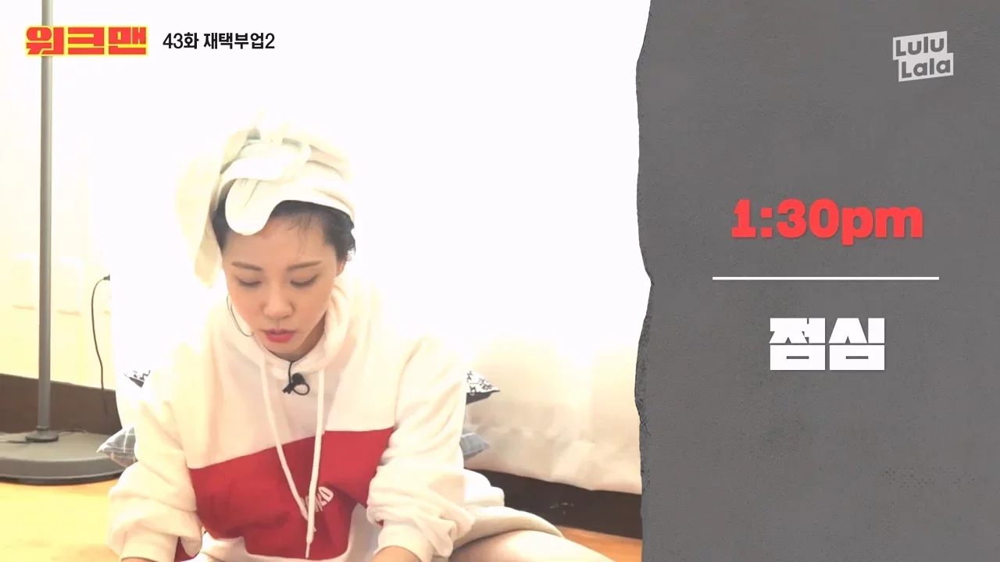
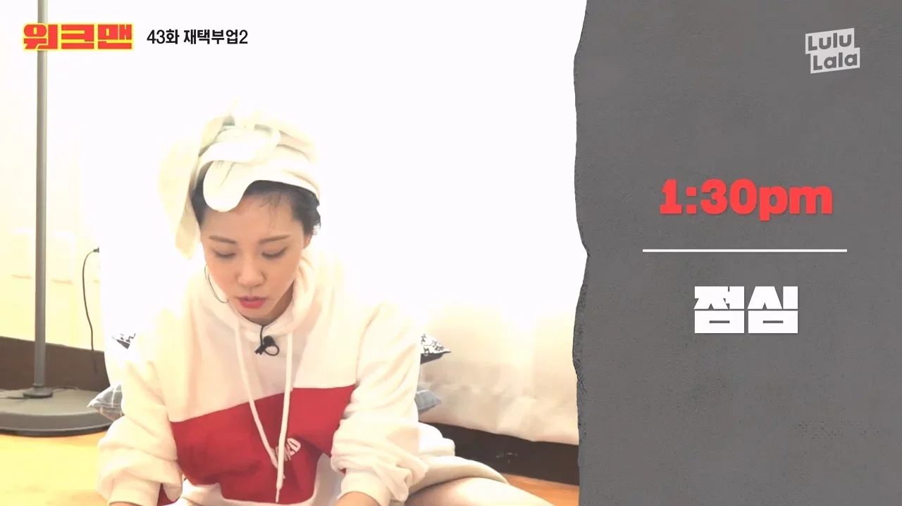
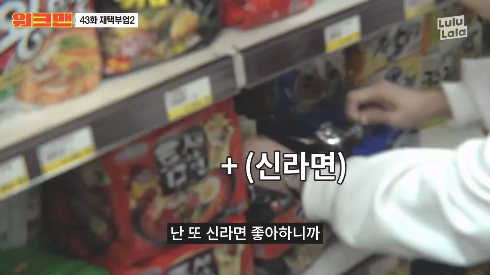
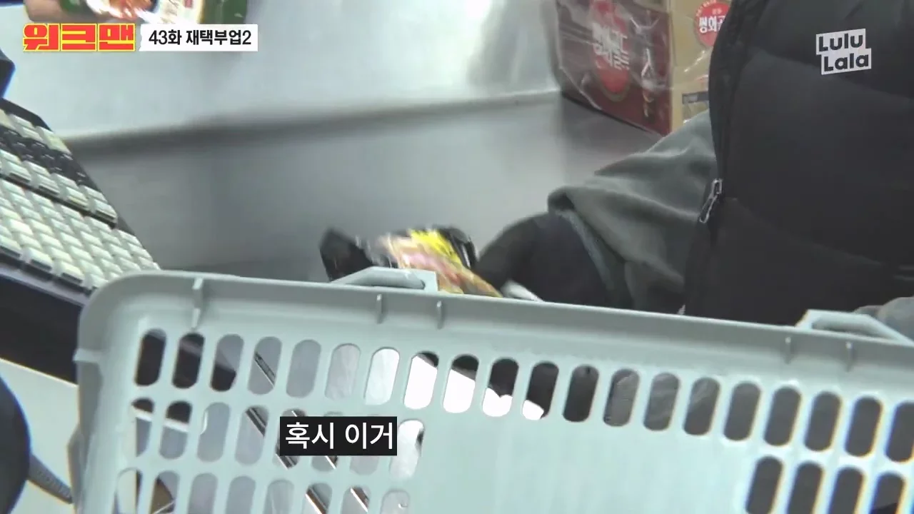
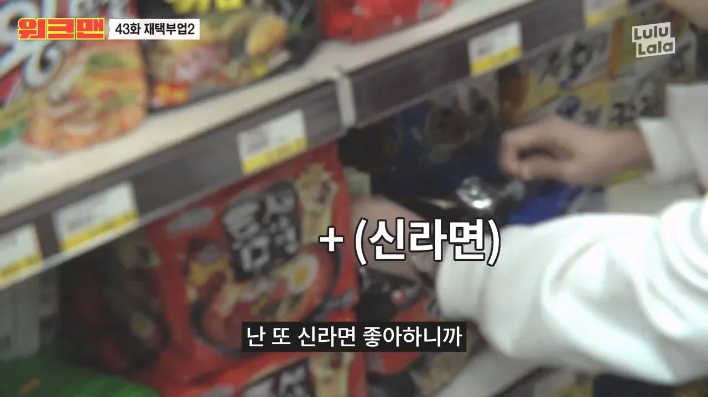
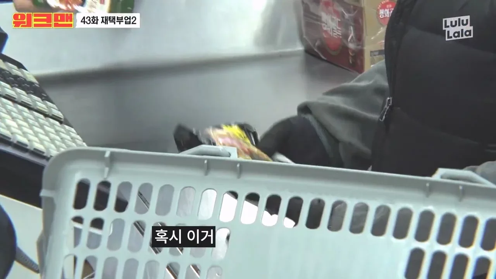

[필수] 마트에서 묶음 라면 뜯어서 낱개로 사도 된다 vs 안 된다 (기적)

라면을 낱개로 살 수 있는 곳을 찾던 나.

낱개로 파는 사이트 검색하다가 이상한 지식인 글을 발견함.
세상에 이런 사람도 있구나…

그러다 누군가 <장성규> 하라고 쓰려다가 그 정도는 아니라는 걸 알았다고 함.
대체 <장성규>가 뭐길래?


동네 마트에 라면을 사러 간 장성규.


라면을 고르다가,

신라면이 낱개로 없자 묶음봉지를 부욱 찢더니 낱개만 꺼내감.
옷이 흰색인 거 보니 사실 장성규는 아니고 옆에 있던 여자가 한 듯.


똥은 여자가 싸고 책임은 장성규가 졌던 거네.


4년전 영상인데 재조명 돼서 사람들 충격 받음.


놀라운 건 저걸 쉴드치는 사람이 있다는 거.


모르고 한 건 죄가 아니라고 함.


 이게 토론할 주제가 되나?
이게 토론할 주제가 되나?
물어보지도 않고 묶음상품을 해체하는 게 어떻게 정당화되지?
 


 


